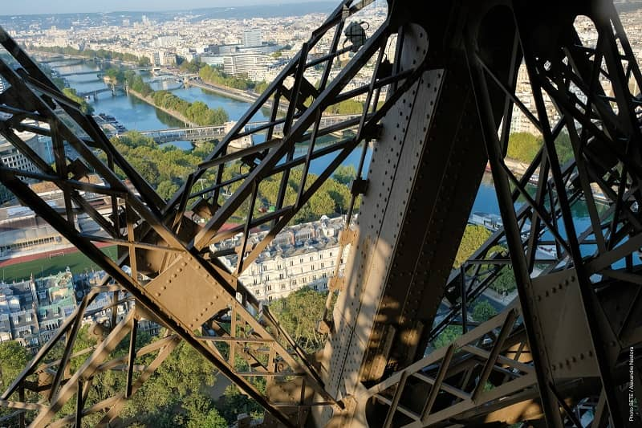
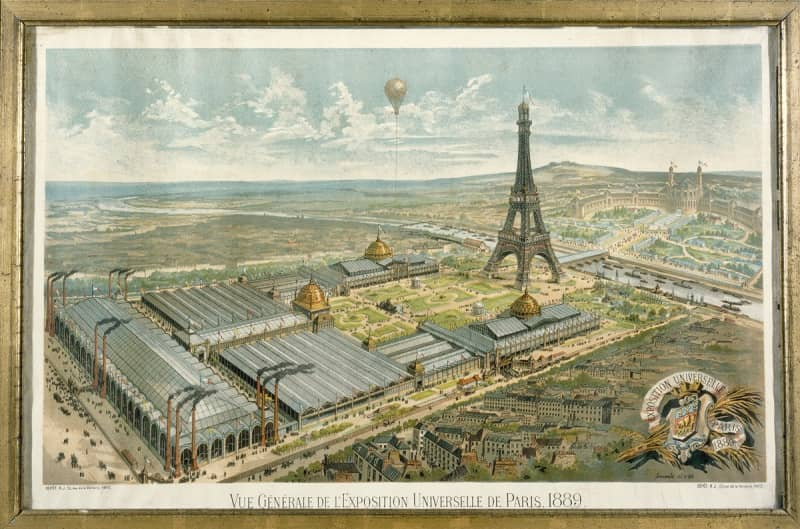
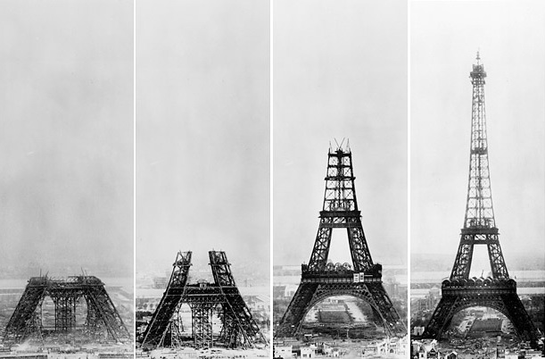
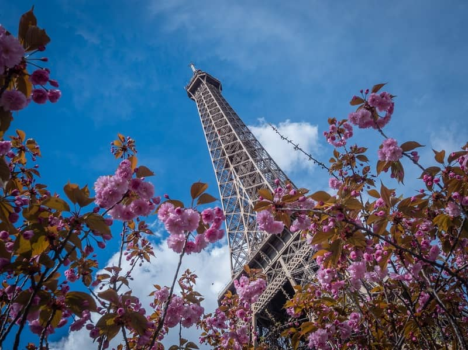

The Eiffel Tower was built from 1887 to 1889 by French engineer Gustave Eiffel, whose company specialized in building metal frameworks and structures. Gustave Eiffel is at the origin of many metallic works in Europe including the Porto Viaduct (Portugal), the Viaduct du Garabit (France) and the Budapest train station (Hungary). Gustave Eiffel's company, that was located in Levallois Perret, very near Paris, France, also built the metal framework for another world-famous monument: the Statue of Liberty (New York, United States), designed by Auguste Bartholdi and offered to the United States as a gift from France to celebrate the 100th anniversary of the American Declaration of Independence in 1886.
The Eiffel Tower is made of iron, not steel. The puddle iron that makes up the Eiffel Tower's structure came from the Pompey forges (East of France). The iron plates and beams produced through the puddling process were then preassembled in the Eiffel factories in Levallois Perret using rivets. Finally, these pieces where taken to the Eiffel Tower construction site to be mounted. The prefab system is what allowed them to build the Eiffel Tower in a record time of 2 years, 2 months and 5 days.
The Eiffel Tower was built to be one the main attractions at the Paris World's Fair in 1889. That year, the World's Fair covered the entire Champ de Mars in Paris and its focus was the vast constructions in iron and steel that were the great industrial advancement of that time. First called the 300-meter Tower, it soon took the name of the man who built it, Gustave Eiffel. The Tower opened to the public the same day as the World's Fair, on May 15, 1889. Controversy over the Tower raged in the art world before and during its construction, but thanks to the audacity of its architecture and design, visitors and Parisians immediately fell under its charm and more than 2 million people toured it in the first year.
For 130 years, the Eiffel Tower has been a powerful and distinctive symbol of the city of Paris, and by extension, of France. At first, when it was built for the 1889 World's Fair, it impressed the entire world by its stature and daring design, and symbolized French know-how and industrial genius. A monument known around the world and a unique tourist attraction, the Eiffel Tower has loyally accompanied the people of Paris and its suburbs in their daily life. Rising to a height of 330 meters, it can be seen from all over Paris, and beyond, day and night until 1 am thanks to its lighting, the twinkling illumination at fixed times and its beacon that reaches out to 80 km, at 360 degrees. The Eiffel Tower has witnessed and sometimes been an actor in important events, both sumptuous and tragic, in France's history. In its early years the Eiffel Tower was a productive laboratory for scientific experiments, in particular for wireless telegraphy, which saved it from destruction after the initially scheduled period of 20 years. The Tower's destiny is also intimately linked to technical advancements in radio and television. The TDF installations and emitters at its summit broadcast all the digital terrestrial television and radio channels to the 12 million inhabitants of île de France. Today, the Eiffel Tower's lights are turned off at night to honor the victims of dramatic events around the world. Even more than a symbol, it has become a means of expression for the city of Paris and all of France.
We have to first put the Eiffel Tower back in its historical context. It was two engineers who worked in Gustave Eiffel's company who, in 1884, imagined building a metal tower 300 meters high for the 1889 World's Fair in Paris. These engineers were specialists in large-scale metallic structures like bridges, railway stations, viaducts, etc. It was only natural that the first sketch of the 300-meter Tower, issued from the calculations made by these two engineers, shows a pylon with 4 legs, each made of 4 robust beams linked together by open-web- joists that rise diagonally to meet at the summit. All these shapes and curves simply recall the biggest viaducts built by Eiffel around the same time!.
The Eiffel Tower was built in record time: 2 years, 2 months and 5 days. From late January 1887 to March 31, 1889. In addition to the technical and architectural prowess, the Tower's rapid construction also represented an unparalleled achievement at that time.
The Eiffel Tower took the name of its creator, Gustave Eiffel, 19th century French entrepreneur and engineer who specialized in building large-scale metal structures (bridges, train stations, viaducts).
In the beginning, no one thought of the Tower as a work of art because it was the work of architects and engineers! The idea for a 300-meter-high tower came, at that time, as part of preparations for the 1889 World's Fair. A competition was launched for the Fair, in 1886, to "study the possibility of raising an iron tower with a square base of 125 meters per side and a height of 300 meters." Gustave Eiffel's project, designed by the engineers Maurice Koechlin and Emile Nouguier, and the architect Stephen Sauvestre, was chosen from among 107 other projects.
